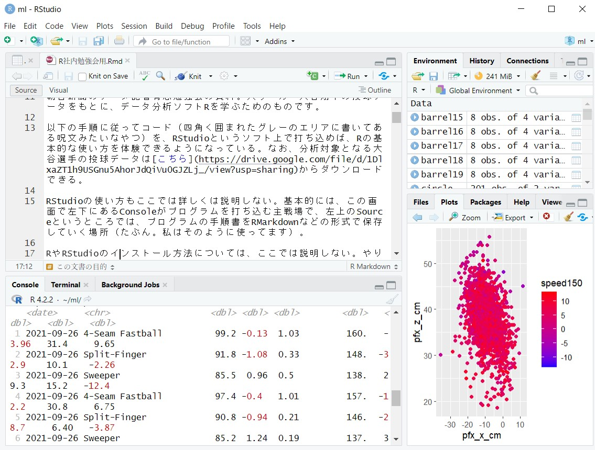
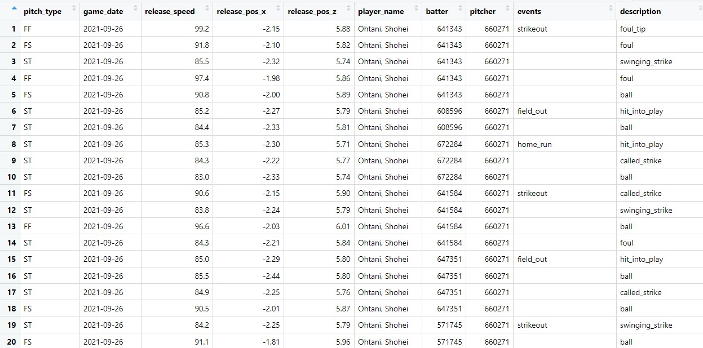

大谷翔平の投球データでRの基本を勉強しよう
小宮山亮磨
2023-03-31
この文書の目的
朝日新聞のデータ記者有志勉強会の資料。大リーガー大谷翔平の投球データをもとに、データ分析ソフトRを学ぶためのものです（ちなみにデータを見ると、2021年と22年で投球スタイルがけっこう変わっていることがよくわかります）。
以下の手順に従ってプログラム（四角く囲まれたグレーのエリアに書いてある呪文みたいなやつ）を、RStudioというソフト上で打ち込めば、Rの基本的な使い方を体験できるようになっている。なお、分析対象となる大谷選手の投球データはこちらからダウンロードできる。
RやRStudioのインストール方法については、ここでは説明しない。やり方はググるといろいろ見つかるはず（たとえばこことか）。
RStudioの使い方もここでは詳しくは説明しない。基本的には、この画面で左下にあるConsoleがプログラムを打ち込む主戦場で、左上のSourceというところはプログラムの手順をRMarkdownなどの形式で保存・記録していく場所（たぶん。私はそのように使ってます）。

必要なパッケージを読み込む
データ加工や可視化につかういろんな道具（関数と呼ばれる）は、「パッケージ」と呼ばれるものにまとめて入っている。
もっともよく使われるパッケージはtidyverseというもの。これがあれば基本的なことはだいたい何でもできる。
baseballrは大リーグデータを取得するのに使う（が、今回はこれなしでもできるようにしてある）。
library(hogehoge)という関数は、hogehogeというパッケージを使えるようにしなさい、という命令を意味している。
それぞれのパッケージがRStudioに入っていないときは、別途インストールする必要がある。インストールするための関数もあるが、今回は省略。
library(tidyverse)
library(baseballr)データを読み込む
下記のコードでは、「data」というフォルダ内にある「ohtani_p.csv」というファイル（2021年と22年の大谷の投球データが一球ごとに記録されている）を、read_csvという関数（命令）を使って読み込んで、「ohtani_p」と名付けたデータに入力している。
データが含んでいるさまざまな数字がそれぞれ何を示しているのかは、こちらに書いてある。
なお、baseballrのパッケージを使って、大リーグのデータベースから直接読み込むこともできる。
ohtani_p <- read_csv("data/ohtani_p.csv")
# baseballrのパッケージがあれば、以下のコードでデータを取得できる。「660271」というのは大谷翔平に割り振られた選手コード。
#ohtani_p <- bind_rows(scrape_statcast_savant_pitcher("2021-04-01",
# "2021-11-30",
# pitcherid = 660271),
# scrape_statcast_savant_pitcher("2022-04-01",
# "2022-11-30",
# pitcherid = 660271))どんなデータなのか見てみる
viewという関数を使うと、データの全体をエクセルのような表形式でチェックできる。
下記のプログラムは、「ohtani_p」というデータをview()という関数にかけてください、という命令を意味している。「%>%」は「パイプ演算子」と呼ばれるもので、ある素材を次の工程に渡すための合図。
ohtani_p %>%
view()一般化すると、
A %>% B() %>% C()
というプログラムで、AをBしたうえでさらにCする、という意味になる。「C(B(A))」と書くこともできるが、いくつも命令が重なるとどんどんわかりにくくなるので、パイプ演算子を使ったほうが便利。
それで先ほどのプログラムを実行すると、こんな感じのものがRStudioの左上に表示されるはず。

画面におさまりきらないので、同じものを別の形式で表示すると…
ちょっとデータの種類（横方向に並んだ「列」）が多すぎる、かな。
欲しい列だけを残す
分析に使わないものは削除して、必要なデータの列だけ残したい。
selectという関数で、試合の日付（game_date）、球種（pitch_name）、球速（release_speed）、縦横それぞれの変化量（pfx_xとpfx_z）だけを選ぶ。
そうして作ったデータを、「ohtani_p_simple」と名付けたものに入力する。
なお、プログラムのところでは、#記号以下に書いたことはコンピューターが無視してくれる（ので、以下のように、人間用のメモとして使える）。
ohtani_p_simple <- ohtani_p %>% # 元データohtani_pを加工したものをohtani_p_simpleに入力する
select(game_date, # 試合の日付と
pitch_name, # 球種と
release_speed, # 球速と
pfx_x, # 横方向の変化量と
pfx_z) # 縦方向の変化量を選ぶ
ohtani_p_simple # ohtani_p_simpleの最初のところを表示する## # A tibble: 4,656 × 5
## game_date pitch_name release_speed pfx_x pfx_z
## <date> <chr> <dbl> <dbl> <dbl>
## 1 2021-09-26 4-Seam Fastball 99.2 -0.13 1.03
## 2 2021-09-26 Split-Finger 91.8 -1.08 0.33
## 3 2021-09-26 Sweeper 85.5 0.96 0.5
## 4 2021-09-26 4-Seam Fastball 97.4 -0.4 1.01
## 5 2021-09-26 Split-Finger 90.8 -0.94 0.21
## 6 2021-09-26 Sweeper 85.2 1.24 0.19
## 7 2021-09-26 Sweeper 84.4 1.41 0.1
## 8 2021-09-26 Sweeper 85.3 0.89 0.8
## 9 2021-09-26 Sweeper 84.3 1.37 0.38
## 10 2021-09-26 Sweeper 83 1.37 0.39
## # … with 4,646 more rows新しい列を作る
球速がマイルで、変化量がフィートで表示されているので、メートル法の住人には分かりにくい。
mutateという関数でメートル法表示のデータを作る。球速に1.60934をかけ算するとキロ表示になり、変化量に30.48をかけるとセンチ表示になる。こうして作ったデータで、さっき作ったohtani_p_simpleを「上書き」する。
ohtani_p_simple <- ohtani_p_simple %>% # ohtani_p_simpleを加工し、それで元のohtani_p_simpleを上書きする
mutate(release_speed_km = release_speed * 1.60934, # マイル表示の球速をキロ表示に変換した列を作る
pfx_x_cm=pfx_x * 30.48, # フィート表示の変化量をセンチ表示に変換した列を作る
pfx_z_cm=pfx_z * 30.48)
ohtani_p_simple## # A tibble: 4,656 × 8
## game_date pitch_name release_speed pfx_x pfx_z releas…¹ pfx_x…² pfx_z…³
## <date> <chr> <dbl> <dbl> <dbl> <dbl> <dbl> <dbl>
## 1 2021-09-26 4-Seam Fastball 99.2 -0.13 1.03 160. -3.96 31.4
## 2 2021-09-26 Split-Finger 91.8 -1.08 0.33 148. -32.9 10.1
## 3 2021-09-26 Sweeper 85.5 0.96 0.5 138. 29.3 15.2
## 4 2021-09-26 4-Seam Fastball 97.4 -0.4 1.01 157. -12.2 30.8
## 5 2021-09-26 Split-Finger 90.8 -0.94 0.21 146. -28.7 6.40
## 6 2021-09-26 Sweeper 85.2 1.24 0.19 137. 37.8 5.79
## 7 2021-09-26 Sweeper 84.4 1.41 0.1 136. 43.0 3.05
## 8 2021-09-26 Sweeper 85.3 0.89 0.8 137. 27.1 24.4
## 9 2021-09-26 Sweeper 84.3 1.37 0.38 136. 41.8 11.6
## 10 2021-09-26 Sweeper 83 1.37 0.39 134. 41.8 11.9
## # … with 4,646 more rows, and abbreviated variable names ¹release_speed_km,
## # ²pfx_x_cm, ³pfx_z_cm欲しい行だけを残す
いろんな球種のうち、直球に関するデータ（横方向に並んだ「行」）だけを見てみたい。これにはfilterという関数を使う。
ohtani_p_simple %>%
filter(pitch_name == "4-Seam Fastball") # 球種（pitch_name）が直球（4-Seam Fastball）のデータだけをフィルタリングする。「=」を二つ並べる（一つじゃダメ！）ことに注意## # A tibble: 1,617 × 8
## game_date pitch_name release_speed pfx_x pfx_z releas…¹ pfx_x…² pfx_z…³
## <date> <chr> <dbl> <dbl> <dbl> <dbl> <dbl> <dbl>
## 1 2021-09-26 4-Seam Fastball 99.2 -0.13 1.03 160. -3.96 31.4
## 2 2021-09-26 4-Seam Fastball 97.4 -0.4 1.01 157. -12.2 30.8
## 3 2021-09-26 4-Seam Fastball 96.6 -0.26 0.91 155. -7.92 27.7
## 4 2021-09-26 4-Seam Fastball 98.6 -0.41 1.1 159. -12.5 33.5
## 5 2021-09-26 4-Seam Fastball 97.5 -0.06 0.9 157. -1.83 27.4
## 6 2021-09-26 4-Seam Fastball 99 -0.5 1.12 159. -15.2 34.1
## 7 2021-09-26 4-Seam Fastball 98.9 -0.55 1.15 159. -16.8 35.1
## 8 2021-09-26 4-Seam Fastball 98.4 -0.18 1.18 158. -5.49 36.0
## 9 2021-09-26 4-Seam Fastball 98.2 -0.1 0.82 158. -3.05 25.0
## 10 2021-09-26 4-Seam Fastball 95.5 -0.52 1.1 154. -15.8 33.5
## # … with 1,607 more rows, and abbreviated variable names ¹release_speed_km,
## # ²pfx_x_cm, ³pfx_z_cm並べ替える
取り出した直球だけのデータについて、球速に応じて並べ変えたランキングを作る。
arrangeという関数を使うと、デフォルトでは「小さい順」に並ぶ。descという関数を使うと、「大きい順」になる。
# 下位
ohtani_p_simple %>%
filter(pitch_name == "4-Seam Fastball") %>%
arrange(release_speed_km) # 球速が「小さい順」に並べる## # A tibble: 1,617 × 8
## game_date pitch_name release_speed pfx_x pfx_z releas…¹ pfx_x…² pfx_z…³
## <date> <chr> <dbl> <dbl> <dbl> <dbl> <dbl> <dbl>
## 1 2021-05-19 4-Seam Fastball 84.7 -0.49 1.25 136. -14.9 38.1
## 2 2021-05-19 4-Seam Fastball 85.8 -0.59 1.44 138. -18.0 43.9
## 3 2021-08-25 4-Seam Fastball 87.3 -0.44 1.37 140. -13.4 41.8
## 4 2021-05-19 4-Seam Fastball 87.6 -0.45 1.48 141. -13.7 45.1
## 5 2021-05-28 4-Seam Fastball 88.3 0.01 1.58 142. 0.305 48.2
## 6 2021-05-19 4-Seam Fastball 88.4 -0.12 1.44 142. -3.66 43.9
## 7 2021-05-19 4-Seam Fastball 88.5 -0.33 1.43 142. -10.1 43.6
## 8 2021-05-19 4-Seam Fastball 89 -0.35 1.57 143. -10.7 47.9
## 9 2021-05-28 4-Seam Fastball 89.4 0.38 1.48 144. 11.6 45.1
## 10 2021-05-19 4-Seam Fastball 89.5 -0.42 1.53 144. -12.8 46.6
## # … with 1,607 more rows, and abbreviated variable names ¹release_speed_km,
## # ²pfx_x_cm, ³pfx_z_cm# 上位
ohtani_p_simple %>%
filter(pitch_name == "4-Seam Fastball") %>%
arrange(desc(release_speed_km)) # 球速が「大きい順」に並べる## # A tibble: 1,617 × 8
## game_date pitch_name release_speed pfx_x pfx_z releas…¹ pfx_x…² pfx_z…³
## <date> <chr> <dbl> <dbl> <dbl> <dbl> <dbl> <dbl>
## 1 2022-09-10 4-Seam Fastball 101. -0.21 1.13 163. -6.40 34.4
## 2 2022-07-22 4-Seam Fastball 101. -0.12 1.1 163. -3.66 33.5
## 3 2021-04-04 4-Seam Fastball 101. -0.44 1.44 163. -13.4 43.9
## 4 2022-06-29 4-Seam Fastball 101 -0.27 1.16 163. -8.23 35.4
## 5 2022-06-09 4-Seam Fastball 101 -0.26 1.23 163. -7.92 37.5
## 6 2021-04-04 4-Seam Fastball 101. -0.41 1.47 162. -12.5 44.8
## 7 2022-07-06 4-Seam Fastball 101. -0.37 1.66 162. -11.3 50.6
## 8 2022-05-18 4-Seam Fastball 101. -0.41 0.99 162. -12.5 30.2
## 9 2022-05-18 4-Seam Fastball 101. 0 0.87 162. 0 26.5
## 10 2021-04-04 4-Seam Fastball 101. -0.23 1.37 162. -7.01 41.8
## # … with 1,607 more rows, and abbreviated variable names ¹release_speed_km,
## # ²pfx_x_cm, ³pfx_z_cmグラフを描く
いよいよ可視化！
まずは登板日ごとの球速の推移
横軸に登板日、縦軸に球速（キロ表示したもの）をとった散布図を描く。また、この際に球種ごとに色分けする。
ggplotという関数は、グラフを描けという命令。aes()という関数で、どのデータをどう使うかを指定する。
ohtani_p_simple %>%
ggplot(aes(x=game_date, # 横軸つまりxに登板日を
y=release_speed_km, # 縦軸つまりyに球速をとり
color=pitch_name)) + # 球種ごとに色分けして
geom_point() # 散布図を描く
このグラフを見ると、
1. 球速が全体的に2022年のほうが21年より速そうなこと
2 21年にはったく投げていなかったシンカーが22年に多く投げられるようになり、また22年後半には直球が減っていること
――が、何となく読み取れる。
球種ごとの球速
上記の1を確かめるために、登板日ごと、また球種ごとに平均球速を計算した上で、折れ線グラフにする。
group_byという関数を使って、登板日と球種ごとのグループを作ることを宣言してから、平均球速を出す。
ohtani_p_simple %>%
group_by(game_date,
pitch_name) %>% # 登板日と球種ごとに「グループ」を作って
summarize(average_speed=mean(release_speed_km)) # 各グループで球速(release_speed_km)の平均値(mean)を計算して、average_speedと名付けた列にその値を入力する## `summarise()` has grouped output by 'game_date'. You
## can override using the `.groups` argument.## # A tibble: 257 × 3
## # Groups: game_date [51]
## game_date pitch_name average_speed
## <date> <chr> <dbl>
## 1 2021-04-04 4-Seam Fastball 158.
## 2 2021-04-04 Curveball 122.
## 3 2021-04-04 Cutter 145.
## 4 2021-04-04 Split-Finger 145.
## 5 2021-04-04 Sweeper 131.
## 6 2021-04-20 4-Seam Fastball 154.
## 7 2021-04-20 Curveball 120.
## 8 2021-04-20 Cutter 140.
## 9 2021-04-20 Split-Finger 144.
## 10 2021-04-20 Sweeper 130.
## # … with 247 more rows# 続いて、これをグラフ化する
ohtani_p_simple %>%
group_by(game_date,
pitch_name) %>%
summarize(average_speed=mean(release_speed_km)) %>% # ここまでは上記と同じ
ggplot(aes(x=game_date, # 横軸に登板日を
y=average_speed, # 縦軸に平均球速をとり
color=pitch_name)) + # 球種ゴロに色分けして
geom_line() # 折れ線グラフを描く## `summarise()` has grouped output by 'game_date'. You
## can override using the `.groups` argument.
球種ごとの球数
上記2を確かめるために、1と同様に登板日と球種ごとにグループを作った上で、それぞれの球数を カウントする。数えるのにはn()という関数を使う。そのうえで棒グラフを描く。
ohtani_p_simple %>%
group_by(game_date,
pitch_name) %>%
summarize(number=n()) # 各グループでの数を数え、numberという列に入力する## `summarise()` has grouped output by 'game_date'. You
## can override using the `.groups` argument.## # A tibble: 257 × 3
## # Groups: game_date [51]
## game_date pitch_name number
## <date> <chr> <int>
## 1 2021-04-04 4-Seam Fastball 52
## 2 2021-04-04 Curveball 2
## 3 2021-04-04 Cutter 1
## 4 2021-04-04 Split-Finger 16
## 5 2021-04-04 Sweeper 21
## 6 2021-04-20 4-Seam Fastball 31
## 7 2021-04-20 Curveball 12
## 8 2021-04-20 Cutter 19
## 9 2021-04-20 Split-Finger 9
## 10 2021-04-20 Sweeper 9
## # … with 247 more rowsohtani_p_simple %>%
group_by(game_date,
pitch_name) %>%
summarize(number=n()) %>% # ここまでは上と同じ
ggplot(aes(x=game_date, # 横軸に登板日を
y=number, # 縦軸に球数をとり
fill=pitch_name)) + # 球種ごとに色分けしたうえで
geom_bar(stat="identity") # 棒グラフを描く。stat="identity"と入れるのを忘れない## `summarise()` has grouped output by 'game_date'. You
## can override using the `.groups` argument.
球種ごとの変化量
ところでそれぞれの球種って、どんなふうに変化するの？というのを可視化する。
ボールの変化量は捕手側から見た数字（つまり横方向は右に行くほどプラス、縦方向は上に行くほどプラス）となっている。これを散布図で球種ごとに色分けして示す。
ohtani_p_simple %>%
ggplot(aes(x=pfx_x_cm, # 横軸に横方向の変化量を
y=pfx_z_cm, # 縦軸に縦方向の変化量をとり
color = pitch_name)) + # 球種ごとに色分けして
geom_point(alpha=0.5) # 散布図にする。球数が多くて点が重なり、わかりにくくなるのを避けるため、透明度を0.5と指定する
先日のWBC決勝で、大谷がマイク・トラウト（エンゼルス）に投じて三振を奪った最後の１球は、捕手から見て右方向に大きく横滑りするSweeperという球種だったが、なるほどこのピンク色のやつですか、という感じ。
おまけ
下記のプログラムは、各球種が全投球数に占める割合を、登板日ごとに示したものです。それぞれの関数が何をしているのか、考えてみましょう。
ヒント：いっぺんに考えると難しいので、上から順番に少しずつ実行に移していくと、それぞれが何をやっているのかがわかりやすくなります。
ohtani_p %>%
group_by(game_date,
pitch_name) %>%
summarize(number=n()) %>%
pivot_wider(names_from = pitch_name,
values_from = number) %>%
mutate(all=sum(`4-Seam Fastball`,
`Split-Finger`,
`Sweeper`,
`Cutter`,
`Curveball`,
`Slider`,
`Sinker`,
`Slow Curve`,
na.rm=TRUE)) %>%
mutate(`4-Seam Fastball`=`4-Seam Fastball`/all,
`Split-Finger`=`Split-Finger`/all,
`Sweeper`=`Sweeper`/all,
`Cutter`=`Cutter`/all,
`Curveball`=`Curveball`/all,
`Slider`=`Slider`/all,
`Sinker`=`Sinker`/all,
`Slow Curve`=`Slow Curve`/all) %>%
select(-all) %>%
pivot_longer(cols=-c(game_date),
names_to = "pitch_type",
values_to = "ratio") %>%
ggplot(aes(game_date,ratio,fill=pitch_type)) +
geom_bar(stat="identity") +
labs(title="投手・大谷の球種別割合の推移",
x="試合日",
y="割合")## `summarise()` has grouped output by 'game_date'. You
## can override using the `.groups` argument.## Warning: Removed 151 rows containing missing values
## (`position_stack()`).